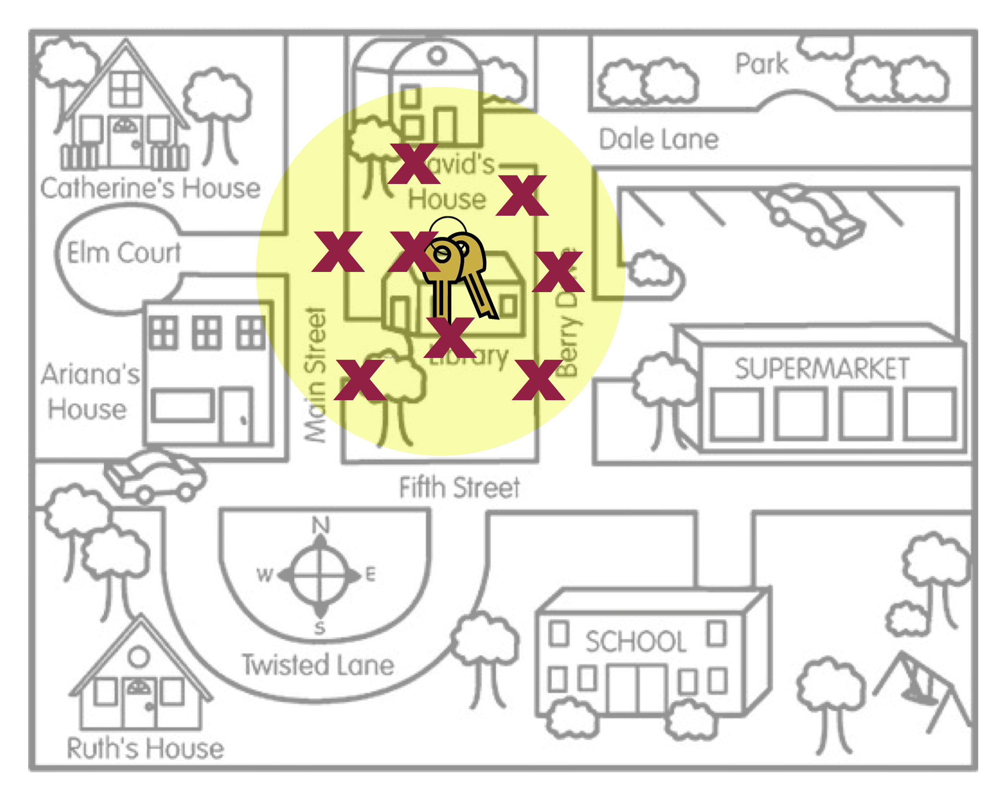

17 Random Sampling and Generalization
In this chapter you will learn how the sampling method used to select sample cases impacts the generalizability of the inferences we can draw about the larger population.
17.1 Generalization
In statistical inference, generalization (a.k.a., external validity) refers to the process of using sample data to draw conclusions about the larger population from which the sample was drawn. The sample data provides statisticians with an estimate of the exact ‘truth’ about the population. For example, data collected from 1,000 Americans about their voting preferences may be used to infer the voting preferences of Americans more generally. Statisticians are typically concerned with making inferences about some population parameter using information obtained from a sample (i.e., from a sample statistic).
How useful is a sample statistic when it comes to estimating a population parameter? Can we draw reasonable inference about a population from sample data? This question is at the heart of weighing evidence about external validity. External validity is the degree to which generalizations to the larger population are accurate and meaningful.
There are two statistical aspects we need to consider when we evaluate evidence for generalization: sampling variation and bias. Sampling variation is the idea that statistics from different samples vary. For example, to use the earlier example, different samples of 1,000 Americans would produce different estimates of voting preferences. This variation needs to be accounted for when we test hypotheses about or provide estimates for population parameters. In hypothesis testing, we account for this by quantifying the sampling variation into the standard error and incorporating that into the test statistic (e.g., the z- or t-value).
The second statistical characteristic we need to attend to is statistical bias. Statistical bias is when sample statistics differ systematically from the population parameter. The key here is the word “systematically”. This implies that there is something in the underlying process (aside from random variation) that is affecting the estimation process.
17.2 Statistical Bias
To help you understand the idea of statistical bias, imagine a person, Arthur Dent, has lost his keys. The actual location of the keys, the Library, is akin to the population parameter. Arthur believes he lost his keys at the Supermarket and searches several places around the Supermarket. The locations where Arthur searches are like sample statistics.
The visual in Figure 17.1 is a metaphor for the concept of statistical bias. Arthur’s search locations (sample statistics) are systematically in the wrong place. On average, where Arthur searched (the middle of the yellow circle) is not the actual location of the keys.
Compare this with Arthur’s search locations in Figure 17.2. In this picture, on average, where Arthur searched is the location of the actual keys. The visual in Figure 17.2 is a metaphor for what is referred to as “unbiasedness”.

There are a couple of other concepts that this metaphor can help us think about:
Even in Figure 17.2, none of the actual search locations were right at the keys. Some of the locations were too far to the left of the keys, and others were too far to the right of the keys. However, ON AVERAGE, the search locations “found” the keys. The way we define unbiased is that the AVERAGE of the statistics is equal to the value of the population parameter. Similarly, the way we define bias is that the AVERAGE of the statistics is NOT equal to the value of the population parameter.
Secondly, bias (or unbiasedness) is a property of the sampling method not of the statistic. The reason the search locations were not in the right place is because the method Arthur used to pick the search locations was biased. He thought he lost his keys in the Supermarket, so that is where he looked.
17.3 Sampling Methods and Bias
The key to statistical generalization is that the sample needs to be selected using an unbiased sampling method. There are several different sampling methods that are unbiased, but they all employ random sampling. Random sampling uses chance to select the sampling units (i.e., cases) from the larger population. When random sampling has been employed in a study, the unbiasedness of the sampling method is strong evidence for generalizations made to the larger population.
There are also several biased methods of selecting a sample. Convenience samples, snowball samples, and volunteer or self-selected samples are all examples of samples that use a biased method of sampling. These samples do not typically represent the population on all characteristics. When there is sampling bias in your study, the generalizability of any findings is limited because characteristic in the sample may be systematically different from the population. Unfortunately the way a biased sample differs from the population is often unclear which makes it difficult to know who any findings can be generalized to.
17.4 Choosing a Simple Random Sample
To draw a simple random sample we need a list of EVERY sampling unit (i.e., case) in the population. This list is called the sampling frame. (Obtaining a sampling frame can be very difficult. Try obtaining a list of everyone who lives in the United States!) Then we employ randomness to draw out sampling units, with the caveat that each unit in the sampling frame has an equal chance of being drawn.
In R, there are several ways to draw a random sample. One method is to create a vector of the unts in the sampling frame and then use the sample() function to draw the random sample. (We used this function in Chapter 8 when we were bootstrapping the SE for use in the one-sample t-test.) As a reminder, the sample() function takes as arguments:
- The vector of units in the sampling frame (i.e., the population).
- The argument
size=indicates the number of sampling units to be sampled (i.e., the sample size). - The argument
replace=indicates whether the sampling units should be sampled with replacement (replace=TRUE) or without replacement (replace=FALSE).
Below is some syntax that could be used to sample 5 random letters from the English alphabet. (Recall that the set.seed() function makes it so that the random selection is repeatable.)
# Create a vector of the sampling frame
alphabet <- c("A", "B", "C", "D", "E", "F", "G", "H", "I", "J",
"K", "L", "M", "N", "O", "P", "Q", "R", "S", "T",
"U", "V", "W", "X", "Y", "Z")
# View sampling frame
alphabet [1] "A" "B" "C" "D" "E" "F" "G" "H" "I" "J" "K" "L" "M" "N" "O" "P" "Q" "R" "S"
[20] "T" "U" "V" "W" "X" "Y" "Z"# Draw n=5 letters without replacement
set.seed(42)
my_sample <- sample(alphabet, size = 5, replace = FALSE)
# View sample
my_sample[1] "Q" "E" "A" "J" "D"There are also several other R functions that draw random samples. For example, rnorm() is used to draw a random sample from a normally distributed population with a particular mean and standard deviation. In this class, it isn’t as important that you know HOW to draw a random sample, but rather that you understand WHY a random sampling is the method of sampling that is the gold standard when it comes to making generalizations from a sample. That being said, it is also important to understand that even if random sampling is employed, there can still be sampling bias. Things like non-response and recall bias can lead to biased findings despite initially choosing the sample randomly.